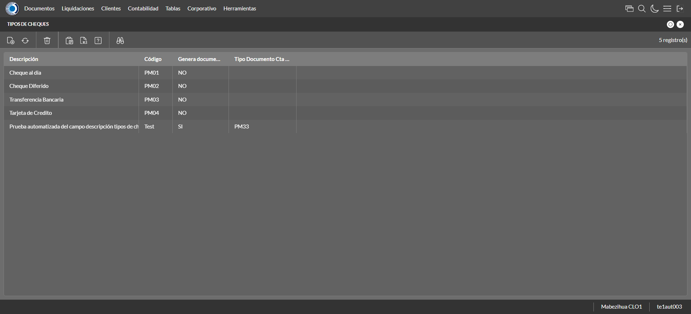
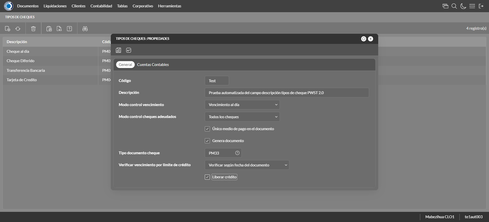
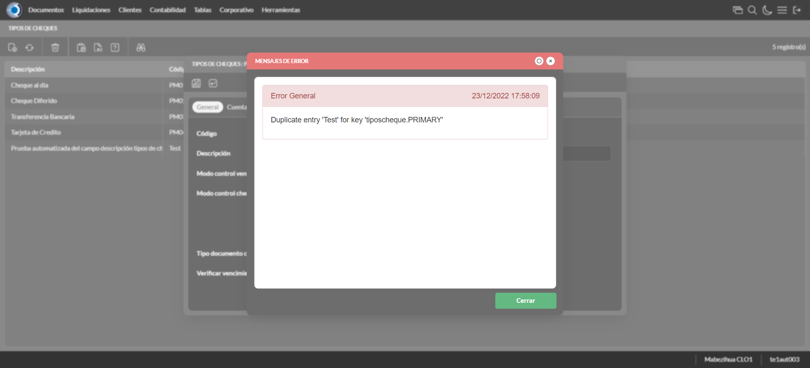
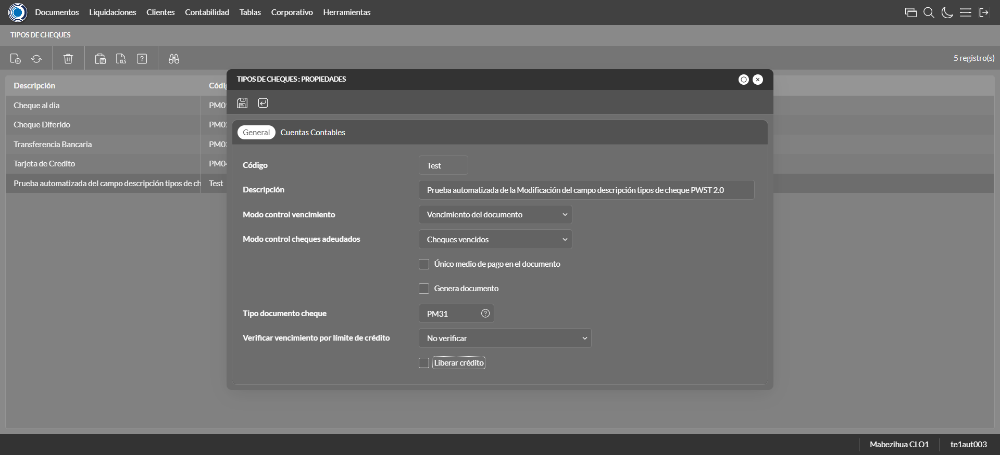
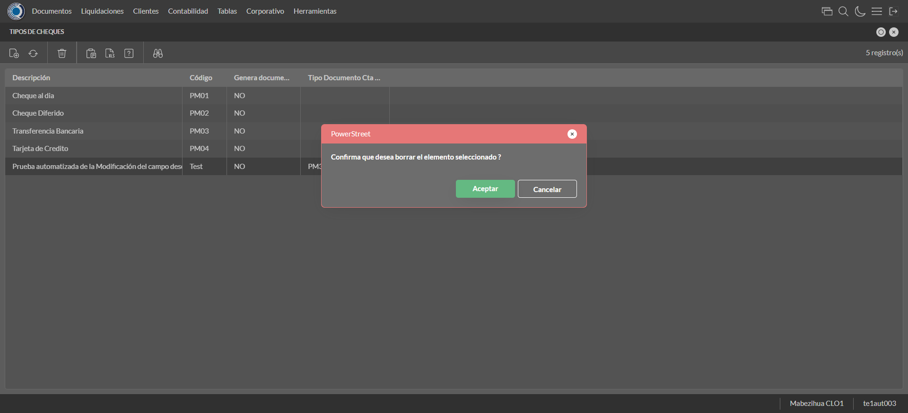

Desarrollado por : Area de Testing PWST
Fecha y hora de inicio : 2022-12-23 11:57:30
Duracion : 0:00:57.410310
Resultado : Total 8，Correctos 7 ，Errores 1 ，Taza de resultado 87.50%
Resumen 87.50% Errores 1 Fallidos 0 Correctos 7 Test realizados 8
| Caso de Prueba | Total | Correctos | Fallido | Error | Detalles | Captura del error |
| TiposCheque.Test: Escenario 1 de Tipos de Cheque | 8 | 7 | 0 | 1 | Detalles | |
test |
ft1_1: 2022-12-23 11:57:32,033 - root - INFO - Se abre el chrome
2022-12-23 11:57:33,354 - root - INFO - Entra a la URL
2022-12-23 11:57:33,470 - root - INFO - Maximiza la pantalla
Traceback (most recent call last):
File "C:\Users\jsand\AppData\Local\Programs\Python\Python310\lib\site-packages\selenium-4.4.0-py3.10.egg\selenium\webdriver\remote\switch_to.py", line 87, in frame
frame_reference = self._driver.find_element(By.ID, frame_reference)
File "C:\Users\jsand\AppData\Local\Programs\Python\Python310\lib\site-packages\selenium-4.4.0-py3.10.egg\selenium\webdriver\remote\webdriver.py", line 856, in find_element
return self.execute(Command.FIND_ELEMENT, {
File "C:\Users\jsand\AppData\Local\Programs\Python\Python310\lib\site-packages\selenium-4.4.0-py3.10.egg\selenium\webdriver\remote\webdriver.py", line 434, in execute
self.error_handler.check_response(response)
File "C:\Users\jsand\AppData\Local\Programs\Python\Python310\lib\site-packages\selenium-4.4.0-py3.10.egg\selenium\webdriver\remote\errorhandler.py", line 243, in check_response
raise exception_class(message, screen, stacktrace)
selenium.common.exceptions.NoSuchElementException: Message: no such element: Unable to locate element: {"method":"css selector","selector":"[id="mainFrame"]"}
(Session info: chrome=108.0.5359.125)
Stacktrace:
Backtrace:
(No symbol) [0x011FF243]
(No symbol) [0x01187FD1]
(No symbol) [0x0107D04D]
(No symbol) [0x010AC0B0]
(No symbol) [0x010AC22B]
(No symbol) [0x010DE612]
(No symbol) [0x010C85D4]
(No symbol) [0x010DC9EB]
(No symbol) [0x010C8386]
(No symbol) [0x010A163C]
(No symbol) [0x010A269D]
GetHandleVerifier [0x01499A22+2655074]
GetHandleVerifier [0x0148CA24+2601828]
GetHandleVerifier [0x012A8C0A+619850]
GetHandleVerifier [0x012A7830+614768]
(No symbol) [0x011905FC]
(No symbol) [0x01195968]
(No symbol) [0x01195A55]
(No symbol) [0x011A051B]
BaseThreadInitThunk [0x76796BD9+25]
RtlGetFullPathName_UEx [0x77B58FD2+1218]
RtlGetFullPathName_UEx [0x77B58F9D+1165]
During handling of the above exception, another exception occurred:
Traceback (most recent call last):
File "C:\Users\jsand\AppData\Local\Programs\Python\Python310\lib\site-packages\selenium-4.4.0-py3.10.egg\selenium\webdriver\remote\switch_to.py", line 90, in frame
frame_reference = self._driver.find_element(By.NAME, frame_reference)
File "C:\Users\jsand\AppData\Local\Programs\Python\Python310\lib\site-packages\selenium-4.4.0-py3.10.egg\selenium\webdriver\remote\webdriver.py", line 856, in find_element
return self.execute(Command.FIND_ELEMENT, {
File "C:\Users\jsand\AppData\Local\Programs\Python\Python310\lib\site-packages\selenium-4.4.0-py3.10.egg\selenium\webdriver\remote\webdriver.py", line 434, in execute
self.error_handler.check_response(response)
File "C:\Users\jsand\AppData\Local\Programs\Python\Python310\lib\site-packages\selenium-4.4.0-py3.10.egg\selenium\webdriver\remote\errorhandler.py", line 243, in check_response
raise exception_class(message, screen, stacktrace)
selenium.common.exceptions.NoSuchElementException: Message: no such element: Unable to locate element: {"method":"css selector","selector":"[name="mainFrame"]"}
(Session info: chrome=108.0.5359.125)
Stacktrace:
Backtrace:
(No symbol) [0x011FF243]
(No symbol) [0x01187FD1]
(No symbol) [0x0107D04D]
(No symbol) [0x010AC0B0]
(No symbol) [0x010AC22B]
(No symbol) [0x010DE612]
(No symbol) [0x010C85D4]
(No symbol) [0x010DC9EB]
(No symbol) [0x010C8386]
(No symbol) [0x010A163C]
(No symbol) [0x010A269D]
GetHandleVerifier [0x01499A22+2655074]
GetHandleVerifier [0x0148CA24+2601828]
GetHandleVerifier [0x012A8C0A+619850]
GetHandleVerifier [0x012A7830+614768]
(No symbol) [0x011905FC]
(No symbol) [0x01195968]
(No symbol) [0x01195A55]
(No symbol) [0x011A051B]
BaseThreadInitThunk [0x76796BD9+25]
RtlGetFullPathName_UEx [0x77B58FD2+1218]
RtlGetFullPathName_UEx [0x77B58F9D+1165]
During handling of the above exception, another exception occurred:
Traceback (most recent call last):
File "C:\xampp\htdocs\versiones\automatizaciones\AutoPWST\01TPCH\testCase\TiposCheque.py", line 36, in test
self.driver.switch_to.frame("mainFrame")
File "C:\Users\jsand\AppData\Local\Programs\Python\Python310\lib\site-packages\selenium-4.4.0-py3.10.egg\selenium\webdriver\remote\switch_to.py", line 92, in frame
raise NoSuchFrameException(frame_reference)
selenium.common.exceptions.NoSuchFrameException: Message: mainFrame
|
|
||||
test_000: Ingresa a la base de datos |
pt1_2: 2022-12-23 11:57:36,589 - root - INFO - Escribe el usuario
2022-12-23 11:57:36,659 - root - INFO - Escribe la contraseña
2022-12-23 11:57:36,725 - root - INFO - Se dio clic en el boton ingresar
2022-12-23 11:57:37,402 - root - INFO - Ejecutar Enterprise
2022-12-23 11:57:41,459 - root - INFO - Cambia entre pestañas
|
|
||||
test_001: Abre menu y ejecuta pantalla |
pt1_3: 2022-12-23 11:57:52,137 - root - INFO - Abre la pantalla de Tipos de Cheques
2022-12-23 11:57:52,722 - root - INFO - La pantalla ejecutada es Tipos de Cheques
2022-12-23 11:57:53,726 - root - INFO - Captura: C:\xampp\htdocs\versiones\automatizaciones\AutoPWST\01TPCH\report\img screen：20221223_11_57_53.png
2022-12-23 11:57:54,434 - root - INFO - Se da clic en el registro creado, para proceder a modificarlo.
2022-12-23 11:57:54,488 - root - INFO - Se presiona el boton 'Eliminar', para eliminar el registro.
2022-12-23 11:57:55,054 - root - INFO - Se confirma el eliminado del registro
2022-12-23 11:57:55,312 - root - INFO - Se presiona el boton 'Refrescar', para crear un nuevo registro igual al anterior.
2022-12-23 11:57:55,528 - root - INFO - Se presiona el boton 'Nuevo', para crear un nuevo registro.
|
 | ||||
test_002: Abre la ventana de nuevo y crear un registro |
pt1_4: 2022-12-23 11:57:56,100 - root - INFO - Se abrio la pantalla para el ingreso de un registro nuevo.
2022-12-23 11:57:56,134 - root - INFO - El campo 'Codigo' si se encuentra visible.
2022-12-23 11:57:56,163 - root - INFO - El campo 'Descrición' si se encuentra visible.
2022-12-23 11:57:56,210 - root - INFO - El campo 'Modo control vencimiento' si se encuentra visible.
2022-12-23 11:57:56,251 - root - INFO - El campo 'Modo control cheques adeudados' si se encuentra visible.
2022-12-23 11:57:56,280 - root - INFO - El campo 'Único medio de pago en el documento' si se encuentra visible.
2022-12-23 11:57:56,308 - root - INFO - El campo 'Genera documento' si se encuentra visible.
2022-12-23 11:57:56,337 - root - INFO - El campo 'Tipo documento cheque' si se encuentra visible.
2022-12-23 11:57:56,366 - root - INFO - El campo 'Verificar vencimiento por límite de crédito' si se encuentra visible.
2022-12-23 11:57:56,429 - root - INFO - El campo 'Liberar crédito' si se encuentra visible.
2022-12-23 11:57:56,477 - root - INFO - Ingresa el codigo del nuevo registro
2022-12-23 11:57:56,648 - root - INFO - Ingresa la descripción del nuevo registro
2022-12-23 11:57:57,005 - root - INFO - Se dió click en la opción Vencimiento del día.
2022-12-23 11:57:57,680 - root - INFO - Se dió click en la opción Todos los Cheques.
2022-12-23 11:57:57,744 - root - INFO - Se dió click en el checkbox Unico Medio Pago.
2022-12-23 11:57:57,796 - root - INFO - Se dió click en el checkbox Genera Documento.
2022-12-23 11:57:58,971 - root - INFO - Se dió doble click en el registro de Tipo de Documento Cheque.
2022-12-23 11:57:59,513 - root - INFO - Se dió click en la opción Verificar según fecha del documento.
2022-12-23 11:57:59,574 - root - INFO - Se dió click en el checkbox Liberar Credito.
2022-12-23 11:58:00,579 - root - INFO - Captura: C:\xampp\htdocs\versiones\automatizaciones\AutoPWST\01TPCH\report\img screen：20221223_11_58_00.png
2022-12-23 11:58:00,780 - root - INFO - Se hace el cambio a la pestaña Cuentas Contables para continuar con el registro nuevo
2022-12-23 11:58:01,351 - root - INFO - Se presiona el boton 'Nuevo', para crear un nuevo registro de Cuentas Contables.
2022-12-23 11:58:01,410 - root - INFO - El campo 'Tipo Documento' si se encuentra visible.
2022-12-23 11:58:01,443 - root - INFO - El campo 'Cuenta Contable' si se encuentra visible.
2022-12-23 11:58:01,497 - root - INFO - El campo 'Centro Costo' si se encuentra visible.
2022-12-23 11:58:02,411 - root - INFO - Se dió doble click en el registro de Tipo Documento.
2022-12-23 11:58:03,449 - root - INFO - Se dió doble click en el registro de Cuentas Contables.
2022-12-23 11:58:04,523 - root - INFO - Se dió doble click en el registro de Centro Costo.
2022-12-23 11:58:04,675 - root - INFO - Se presiona el boton 'Aceptar', para guardar el registro de Cuentas Contables.
2022-12-23 11:58:04,877 - root - INFO - Se da clic en el boton Guardar; se debe crear un nuevo registro.
|
 | ||||
test_003: Repetir el registro creado anteriormente |
pt1_5: 2022-12-23 11:58:05,107 - root - INFO - Se presiona el boton 'Refrescar', para crear un nuevo registro igual al anterior.
2022-12-23 11:58:05,353 - root - INFO - Se presiona el boton 'Nuevo', para crear un nuevo registro igual al anterior.
2022-12-23 11:58:05,958 - root - INFO - Se abrio la pantalla para el ingreso de un registro nuevo.
2022-12-23 11:58:06,006 - root - INFO - Ingresa el codigo del nuevo registro
2022-12-23 11:58:06,184 - root - INFO - Ingresa la descripción del nuevo registro
2022-12-23 11:58:06,539 - root - INFO - Se dió click en la opción Vencimiento del día.
2022-12-23 11:58:07,169 - root - INFO - Se dió click en la opción Todos los Cheques.
2022-12-23 11:58:07,510 - root - INFO - Se dió click en el checkbox Unico Medio Pago.
2022-12-23 11:58:07,565 - root - INFO - Se dió click en el checkbox Genera Documento.
2022-12-23 11:58:08,218 - root - INFO - Se dió doble click en el registro de Tipo de Documento Cheque.
2022-12-23 11:58:08,715 - root - INFO - Se dió click en la opción Verificar según fecha del documento.
2022-12-23 11:58:09,045 - root - INFO - Se dió click en el checkbox Liberar Credito.
2022-12-23 11:58:09,104 - root - INFO - Se da clic en el boton Guardar; NO se debe crear un nuevo registro.
2022-12-23 11:58:10,117 - root - INFO - Captura: C:\xampp\htdocs\versiones\automatizaciones\AutoPWST\01TPCH\report\img screen：20221223_11_58_10.png
2022-12-23 11:58:10,335 - root - INFO - Se presiona el boton 'Cerrar', para cerrar el mensaje de duplicidad de llave primaria
2022-12-23 11:58:10,453 - root - INFO - Se presiona el boton 'Cerrar', para cerrar la ventana
|
 | ||||
test_004: Modificar el registro |
pt1_6: 2022-12-23 11:58:10,567 - root - INFO - Se presiona el boton 'Refrescar', para proceder a modificar el registro.
2022-12-23 11:58:12,233 - root - INFO - Se da clic en el registro creado, para proceder a modificarlo.
2022-12-23 11:58:13,033 - root - INFO - Se modifica el contenido del campo Descripción
2022-12-23 11:58:13,374 - root - INFO - Se dió click en la opción Vencimiento del documento.
2022-12-23 11:58:14,035 - root - INFO - Se dió click en la opción Cheques Vencidos.
2022-12-23 11:58:14,106 - root - INFO - Se dió click en el checkbox Unico Medio Pago.
2022-12-23 11:58:14,157 - root - INFO - Se dió click en el checkbox Genera Documento.
2022-12-23 11:58:15,352 - root - INFO - Se dió doble click en el registro de Tipo Documento Cheque.
2022-12-23 11:58:15,860 - root - INFO - Se dió click en la opción de Vencimiento Limite.
2022-12-23 11:58:15,924 - root - INFO - Se dió click en el checkbox liberar credito.
2022-12-23 11:58:16,936 - root - INFO - Captura: C:\xampp\htdocs\versiones\automatizaciones\AutoPWST\01TPCH\report\img screen：20221223_11_58_16.png
2022-12-23 11:58:17,168 - root - INFO - Se hace el cambio de pestaña para continuar con la modifcación del regisro
2022-12-23 11:58:18,306 - root - INFO - Se da clic en el registro de Cuentas Contables, para proceder a modificarlo.
2022-12-23 11:58:20,053 - root - INFO - Se dió doble click en el registro de Tipo Documento.
2022-12-23 11:58:21,123 - root - INFO - Se dió doble click en el registro de Cuentas Contables.
2022-12-23 11:58:22,194 - root - INFO - Se dió doble click en el registro de Centro Costo.
2022-12-23 11:58:22,344 - root - INFO - Se presiona el boton 'Aceptar', para guardar la modificación del registro de Cuentas Contables.
2022-12-23 11:58:22,540 - root - INFO - Se da clic en el boton Guardar; se debe modificar la informacion del registro.
|
 | ||||
test_005: Eliminar el registro creado |
pt1_7: 2022-12-23 11:58:22,738 - root - INFO - Se presiona el boton 'Refrescar', para proceder a eliminar el registro.
2022-12-23 11:58:24,329 - root - INFO - Se da clic en el registro creado, para proceder a eliminarlo.
2022-12-23 11:58:25,388 - root - INFO - Se presiona el boton 'Eliminar', para eliminar el registro.
2022-12-23 11:58:25,389 - root - INFO - Captura: C:\xampp\htdocs\versiones\automatizaciones\AutoPWST\01TPCH\report\img screen：20221223_11_58_25.png
2022-12-23 11:58:25,576 - root - INFO - Se confirma el eliminado del registro
2022-12-23 11:58:25,821 - root - INFO - Se presiona el boton 'Refrescar', para verificar si el registro ha sido eliminado.
2022-12-23 11:58:26,009 - root - INFO - Se presiona el boton 'Cerrar', para cerrar la pantalla de Tipos Cheques.
|
 | ||||
test_006: Cerrar_Navegador |
pt1_8: 2022-12-23 11:58:28,220 - root - INFO - Se cierra chrome
|
|
||||
| Caso de prueba | 8 | 7 | 0 | 1 | Taza de resultado：87.50% | |